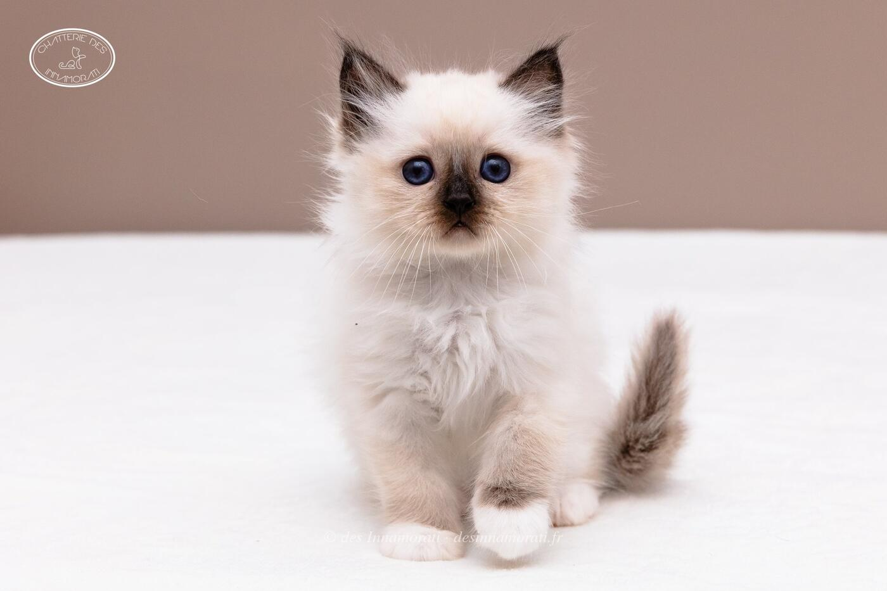
RobeMâle · Seal point
Naissance7 octobre 2018
TitresSC · NW · JW · DSM · DVM
StatutRetraité, stérilisé, vit à la maison
Album16 photos, de décembre 2018 à décembre 2021
Frères et sœursLuigi aka Oreos des Innamorati, Obade des Innamorati, Olympe des Innamorati, Ops des Innamorati
Demi-frères et sœurspar sa mère : 2017 avec Jacaranda Maître Mão
par son père : 2019 avec Crowned Dream Lizz, 2019 avec Norma Jean, 2019 avec Odyssée du Castel Walou, 2019 avec Crowned Dream Kacey
par son père : 2019 avec Crowned Dream Lizz, 2019 avec Norma Jean, 2019 avec Odyssée du Castel Walou, 2019 avec Crowned Dream Kacey


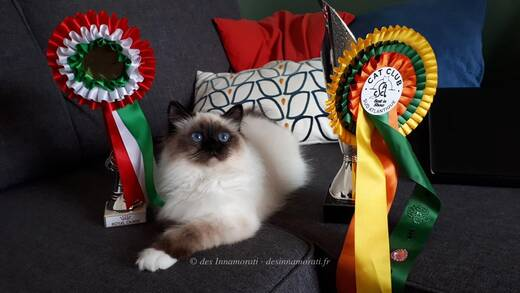


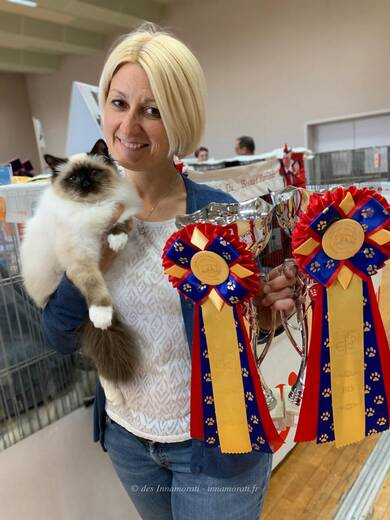

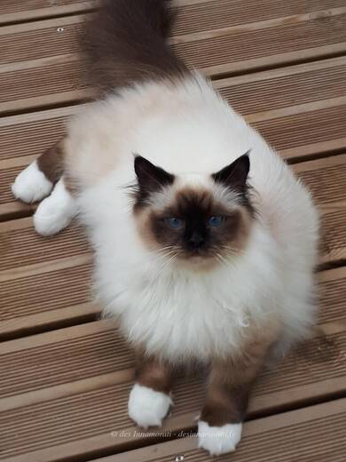

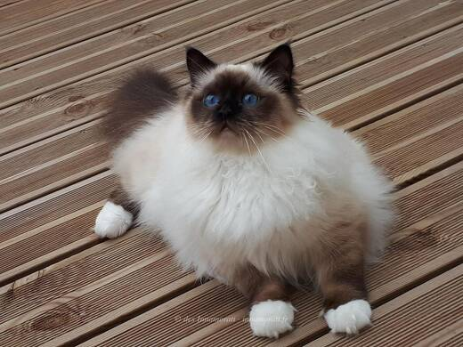


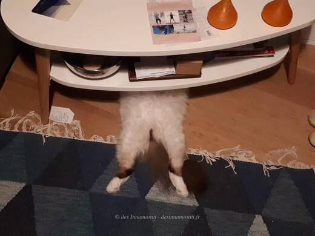

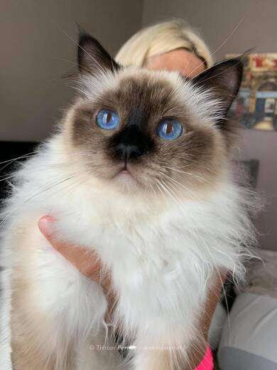

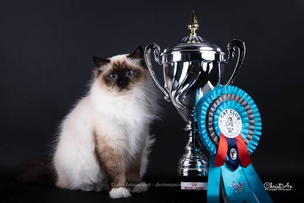

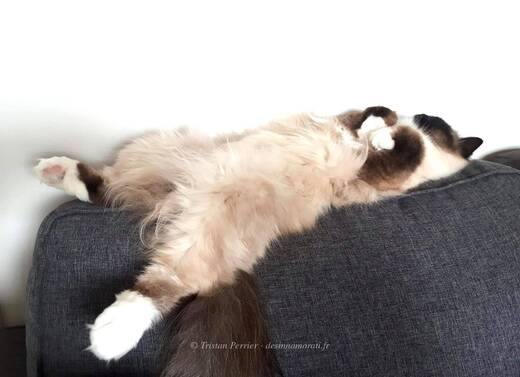

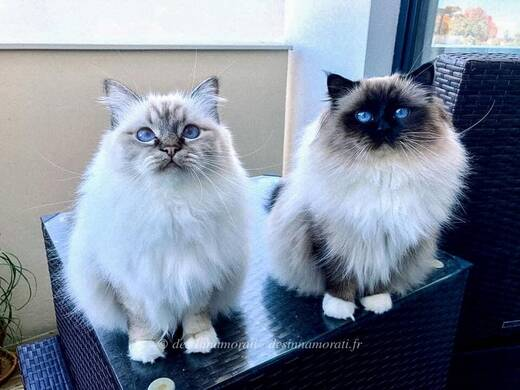

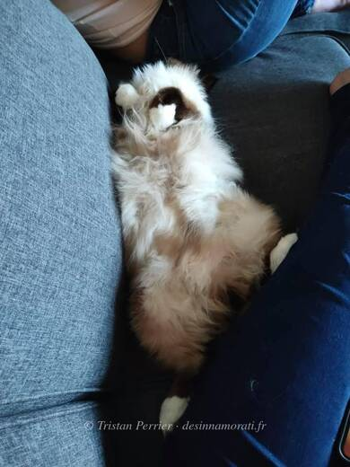

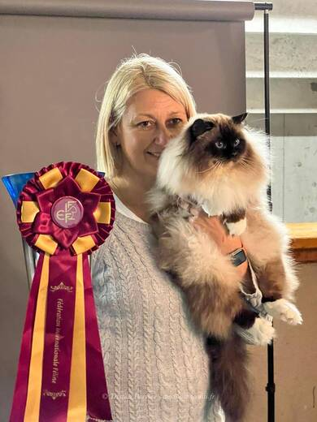

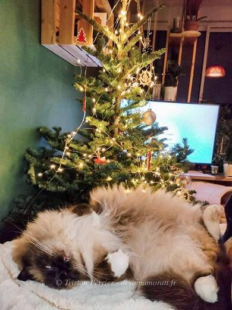
Palmarès
22 expositions · 43 jugements · 19 Best in Show · 8 Best of Best2026
- Mediterranean Winner Show BordeauxCAP · NOM
2025
- Le Taillan BordeauxCAP · NOM · BIS
- Le Taillan BordeauxCAP · NOM · BIS
2024
- Paris VersaillesPH · NOM
- Paris VersaillesPH · BIV · NOM
- Paris VersaillesPH · BIV · NOM
2022
- LantonCACS · BIV · NOM
- LantonCACS
- ParisCACS
- ParisCACS
- TilhCACS
- TilhCACS
- PontorsonCACS · BIV · NOM · BIS · BOB 2ème
- PontorsonCACS · BIV · NOM · BIS · BOB 1er
2021
- PontchâteauCACS · BIV · NOM · BIS
- PontchâteauCACS · BIV · NOM · BIS · BOB 1er
- St Seurin sur l'IsleCAC · prix spécial
- Braud et Saint LouisCAGCIB · BIV
- Braud et Saint LouisCAGCIB · BIV
2020
- ParisEXC2
- ParisCAGCIB
- LéognanEXC2
- LéognanCAGCIB
2019
- BiarritzCAGCIB · BIV · NOM
- BiarritzCAGCIB · BIV · NOM
- RomeCAGCIB · BIV
- RomeCACIB
- MarsacCACIB · BIV · NOM · BIS
- MarsacCACIB · NOM · BIS
- ParisCACIB · BIV · NOM · BIS · BOB 2ème
- ParisCACIB · NOM · BIS · BOB 2ème
- CastetsCAC · BIV · NOM · BIS · BOB 3ème
- CastetsCAC · NOM
- SartrouvilleCAC · BIV · NOM · BIS · BOB 1er
- SartrouvilleCAC · BIV · NOM · BIS · BOB 3ème
- Annecy-SevrierEXC1 · NOM · BIV · BIS
- Annecy-SevrierEXC1 · NOM · BIS
- Saint QuentinEXC1 · NOM · BIS
- Saint QuentinEXC1 · NOM · BIS
- BlayeEXC1 · BIV · NOM · BIS
- BlayeEXC1 · BIV · NOM · BIS
- MilanEXC1
- MilanEXC1
EXC Excellent (classement) · CAC, CACIB, CAGCIB, CACS certificats de champion, champion international, grand champion international et suprême · CAP, CAPIB, CAGPIB, CAPS équivalents pour les chats stérilisés · BIV meilleur de la variété · NOM nommé pour le Best in Show · BIS Best in Show · BOB Best of Best, le meilleur de toute l’exposition
Photos réduites et marquées. Elles appartiennent à la Chatterie des Innamorati et ne peuvent pas être reprises dans une annonce.